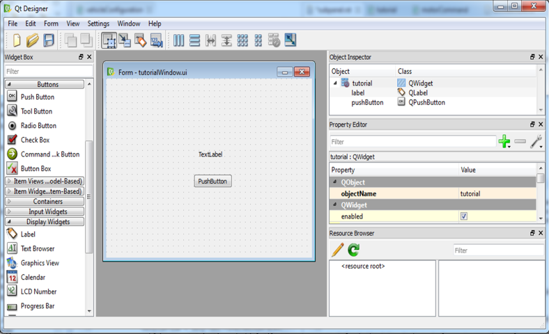
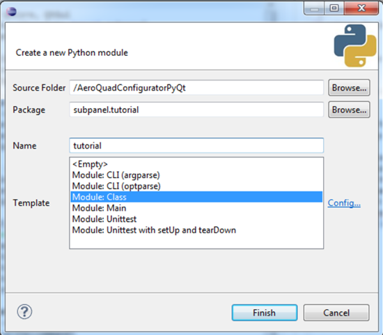

How to Setup Your Own Subpanels¶
Here are the steps you can follow to create your own subpanel. This example will create a subpanel called “tutorial”. You can replace any references to “tutorial” or tutorialWindow” with your desired names.
- In Eclipse, create a new Python package in the PyDev Package Explorer
- Right click on the subpanel package
- Select New->PyDev Package
- Update the dialog box as shown, in the Name field, choose the name of your own subpanel package

- Open the Qt Designer application, in the New Form dialog box, select Widget->Create
{kind=link}
- In Qt Designer, create the GUI for your subpanel

- Place a Label on the Form
- Place a Push Button on the Form
- In the Property Editor, change the name of the QWidget from Form to tutorial
- Save the .ui file into the folder created from the previous step
- In Eclipse right click in the PyDev Package Explorer and select refresh, your file should appear there
{kind=link}
- Autogenerate Python code from PyQt
- Open up a command window/terminal window and go to the folder where your .ui file is saved
- Type “pyuic4 tutorialWindow.ui -o tutorialWindow.py”
- The filename specified after the -o will be the autogenerated UI filename
- Refresh the PyDev Package Explorer to see the newly created tutorial.py file
- If you open this file you will find the names of the widgets you can interact with (these can be renamed in Qt Designer)
- If you ever want to change your GUI, do it in Qt Designer and follow these steps again to update your tutorial.py file
- Create your subpanel script using the subpanel class

- In the PyDev Package Explorer, right click on you package and created New->PyDev Module
- Inside the newly created file, change the text MyClass to the name of your subpanel
- Any references to the text “tutorial” can be replaced with your subpanel name
{kind=link}
- Change the default auto-generated code to the following:
from PyQt4 import QtCore, QtGui
from subpanel.subPanelTemplate import subpanel
from subpanel.tutorial.tutorialWindow import Ui_tutorial
class tutorial(QtGui.QWidget, subpanel):
def __init__(self):
QtGui.QWidget.__init__(self)
subpanel.__init__(self)
self.ui = Ui_tutorial()
self.ui.setupUi(self)
self.ui.pushButton.clicked.connect(self.getSoftwareVersion)
def getSoftwareVersion(self):
if (self.comm.isConnected()):
self.comm.write("!")
self.ui.label.setText(self.comm.read())
Note
From the line: from subpanel.tutorial.tutorialWindow import Ui_tutorial
- The first part after from is subpanel.<your Python package name>.<your UI filename from step 4b>
- The last part after import is found inside tutorialWindow.py and is the class name (the name of the QWidget from step 3c)
Inside __init__(self), place any initialization steps you’d like to perform inside:
- You have inherited all functions from the QtGui.QWidget and subpanel classes, so they get initialized here
- The object self.ui is defined from the UI you created
- You will be able to interact with the widgets you created in Qt Designer through this object
- A good example is the pushbutton you created in the example above, so you refer to it as self.ui.pushbutton
- Since the tutorial class inherits from subpanel, all the function calls from subpanel are available to you
- View the functions available to you here.
- This also includes the communications class, the function calls available are found here.
- From here, you will need to learn how to work with Python and PyQt. Google to find out the syntax you need to do what you want (which usually takes you to stackoverflow.com).
- Add the newly created subpanel to the Configurator menu by editing AeroQuadConfigurator.xml under <SubPanels>
<Subpanel Name="Tutorial">
<Requirement>All</Requirement>
<Path>tutorial.tutorial</Path>
<Class>tutorial</Class>
</Subpanel>
Default Subpanel Behavior¶
- The default behavior of a subpanel is to read the <Telemetry> element inside AeroQuadConfigurator.xml. This will then send that request to the AeroQuad board and will continually read the board response.
- To change this, you will need to redefine the start() method in the subpanel class.
- Look at the existing subpanels for examples on how to setup various subpanel bahaviors
- commMonitor.py sends a command when the user hits the send button, then reads the communication buffer until empty
- motorCommand.py does not send any telemetry requests, but sends a command when a button is pressed
- updateParameters.py sends a telemetry request for various EEPROM stored values and sends an update command when the update button is pressed
- vehicleConfiguration sends a single telemetry command and waits for the response
- Both dataPlot.py and vehicleConfiguration sends a single telemetry request and continually reads and displays the streamed telemetry values